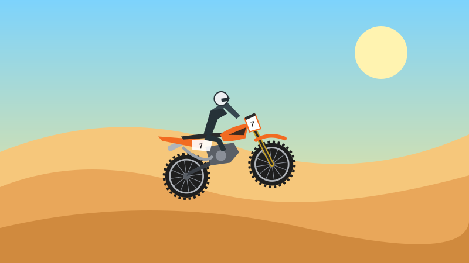

רוכבים על השטח
אופנועי שטח: אדרנלין, טבע, חברים ואתגר אחד גדול על שני גלגלים

אתגר, כיף ותחרויות
מה הופך את הרכיבה בשטח לכל כך מיוחדת, איזה ציוד צריך, ואילו תחרויות יש בישראל ובעולם.
לדף ←
סוגי אופנועים ויצרנים
מוטוקרוס, אנדורו, טריאל, סופרמוטו ואופנועים חשמליים, והחברות שמייצרות אותם.
לדף ←
מסלולי רכיבה בישראל
מהבזלת של הגולן ועד החולות של הנגב: אזורי רכיבה, אתגרים, וכללים לרכיבה אחראית.
לדף ←7סוגי אופנועי שטח
11יצרנים מובילים
5אזורי רכיבה בישראל
1913שנת התחרות הוותיקה בשטח (ISDE)
ברוכים הבאים ל-DirtRide IL
רכיבה על אופנוע שטח היא ספורט שמשלב מהירות, טכניקה וכושר גופני. בכל רכיבה השטח משתנה: חול, בוץ, סלעים, עליות וירידות, וכל מכשול הוא אתגר חדש.
באתר תמצאו את כל מה שצריך לדעת לפני שעולים על האופנוע: איזה סוג אופנוע מתאים לכם, איך מתמגנים נכון, היכן מותר לרכוב בישראל, ואילו תחרויות כדאי לעקוב אחריהן.